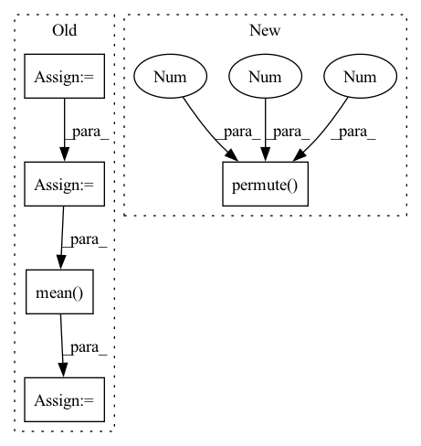

Pattern ID :40200
Before Change
loss = self.cal_loss(outputs, targets, output_lengths, target_lengths)
predicts = self.forward(inputs, input_lengths)
predicts = [self.text_process.int2text(sent) for sent in predicts]
targets = [self.text_process.int2text(sent) for sent in targets]
list_wer = torch.tensor(
[self.cal_wer(i, j).item() for i, j in zip(predicts, targets)]
)
wer = torch.mean( list_wer)
if batch_idx % 100 == 0:
self.log_output(predicts[0], targets[0], wer)
After Change
outputs, output_lengths = self(inputs, input_lengths)
loss = self.criterion(
outputs.permute(1 , 0 , 2 ) , targets_ctc, output_lengths, target_lengths
)
self.log("test loss", loss)In pattern: SUPERPATTERN
Frequency: 3
Non-data size: 5
Instances Fragment ID: 114188495
Project Name: manhph2211/vistt
Commit Name: 742be9424d91058a3c3e25adc4db742534fffab3
Time: 2022-08-30
Author: manhph5@vingroup.net
File Name: VASR/local/src/engine/trainer.py
M Class Name: ConformerModule
N Class Name: ConformerModule
M Method Name: test_step(3)
N Method Name: test_step(3)
M Parent Class: BaseModel
N Parent Class: pl.LightningModule
M File Name: VASR/local/src/engine/trainer.py
N File Name: VASR/local/src/engine/trainer.py
M Start Line: 105
M End Line: 136
N Start Line: 128
N End Line: 148
Before Change
loss = self.cal_loss(outputs, targets, output_lengths, target_lengths)
predicts = self.forward(inputs, input_lengths)
predicts = [self.text_process.int2text(sent) for sent in predicts]
targets = [self.text_process.int2text(sent) for sent in targets]
list_wer = torch.tensor(
[self.cal_wer(i, j).item() for i, j in zip(predicts, targets)]
)
wer = torch.mean( list_wer)
if batch_idx % 100 == 0:
self.log_output(predicts[0], targets[0], wer)
After Change
outputs, output_lengths = self(inputs, input_lengths)
loss = self.criterion(
outputs.permute(1 , 0 , 2 ) , targets_ctc, output_lengths, target_lengths
)
self.log("test loss", loss) Fragment ID: 114188383
Project Name: manhph2211/vistt
Commit Name: 742be9424d91058a3c3e25adc4db742534fffab3
Time: 2022-08-30
Author: manhph5@vingroup.net
File Name: VASR/local/src/engine/trainer.py
M Class Name: ConformerModule
N Class Name: ConformerModule
M Method Name: validation_step(3)
N Method Name: validation_step(3)
M Parent Class: BaseModel
N Parent Class: pl.LightningModule
M File Name: VASR/local/src/engine/trainer.py
N File Name: VASR/local/src/engine/trainer.py
M Start Line: 72
M End Line: 103
N Start Line: 106
N End Line: 126
Before Change
frequencies = librosa.fft_frequencies(sr=sample_rate, n_fft=n_fft)
a_weighting = librosa.A_weighting(frequencies)[None, :, None]
a_weighting = torch.from_numpy(a_weighting.astype(np.float32)).to(audio.device)
loudness = power_db + a_weighting
// Set dynamic range.
loudness -= ref_db
loudness = torch.clamp(loudness, min=-range_db)
// Average over frequency bins.
loudness = torch.mean( loudness, dim=1)
// Remove temporary batch dimension.
loudness = loudness[0] if is_1d else loudness
After Change
hop_length = sample_rate // frame_rate
s = torch.stft(audio, n_fft=n_fft, hop_length=hop_length, return_complex=True, center=center)
// batch, frequency_bins, n_frames
s = s.permute(0 , 2 , 1 )
if a_weighting is None:
frequencies = librosa.fft_frequencies(sr=sample_rate, n_fft=n_fft)
a_weighting = librosa.A_weighting(frequencies)
a_weighting = torch.from_numpy(a_weighting.astype(np.float32)).to(audio.device) Fragment ID: 114188482
Project Name: hyakuchiki/realtimeddsp
Commit Name: 18a14dbae33c975de26b9dcd41d02e5a59d0d5f9
Time: 2022-05-16
Author: naotakemasuda@g.ecc.u-tokyo.ac.jp
File Name: diffsynth/spectral.py
M Class Name: AnonimousClass
N Class Name: AnonimousClass
M Method Name: compute_loudness(8)
N Method Name: compute_loudness(8)
M Parent Class:
N Parent Class:
M File Name: diffsynth/spectral.py
N File Name: diffsynth/spectral.py
M Start Line: 149
M End Line: 170
N Start Line: 164
N End Line: 171